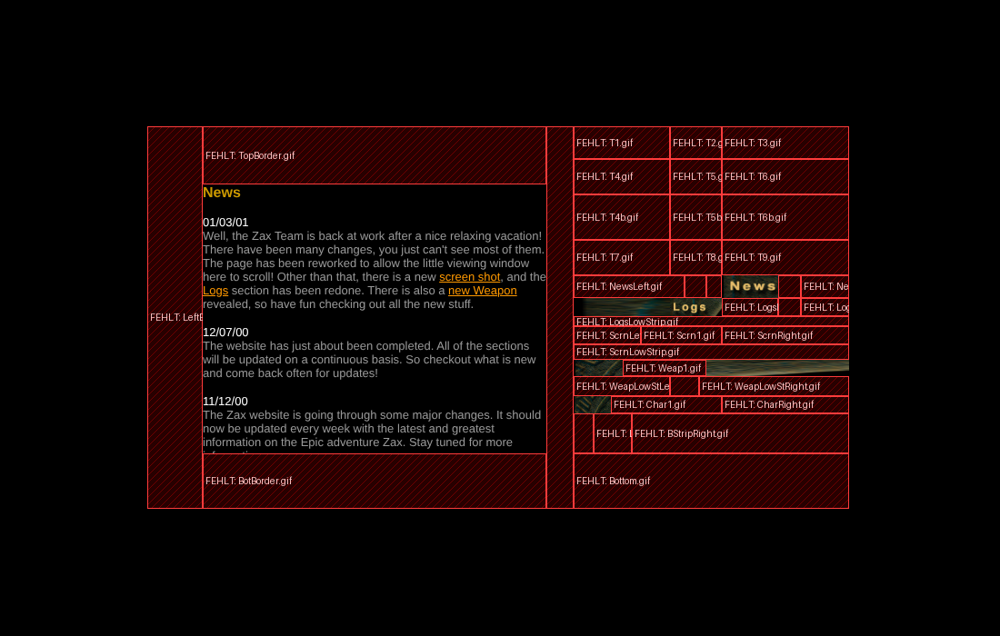
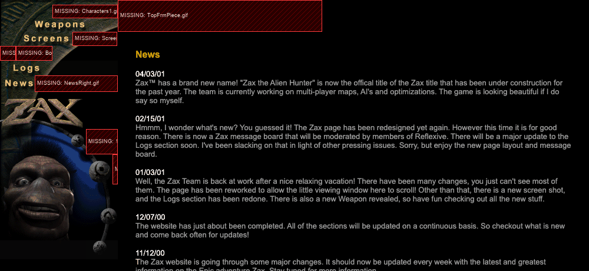
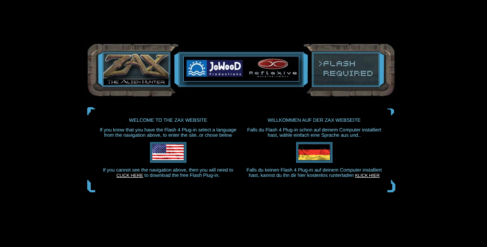

Archive
The original websites, restored from copies at the Internet Archive. They are shown as they were – with frames, period HTML and, where noted, Flash. Only archived material is shown: images that were never preserved are marked as missing.
reflexive.net/Zax – January 2001

The developer's site during production. Most of the layout graphics were not preserved; missing images are marked.
reflexive.net/Zax – April 2001

The stone medallion design with Zax and the rune chain. Some frame graphics were not preserved; missing images are marked.
reflexive.net/Zax – December 2001

The release version with FAQ, demo page and the mirrored navigation.
zax-game.com – 2002 to 2004

The official JoWooD site in English and German. Navigation and banner are the original Flash files, played with the Ruffle emulator.
jowood.com – January 2003

The game's pages on the publisher's site in English and German: the game, screenshots, demo, patches, reviews, system requirements and registration. Links to other JoWooD pages lead to the Internet Archive; the Zax logo and most English screenshots were not preserved, the forms are disabled.